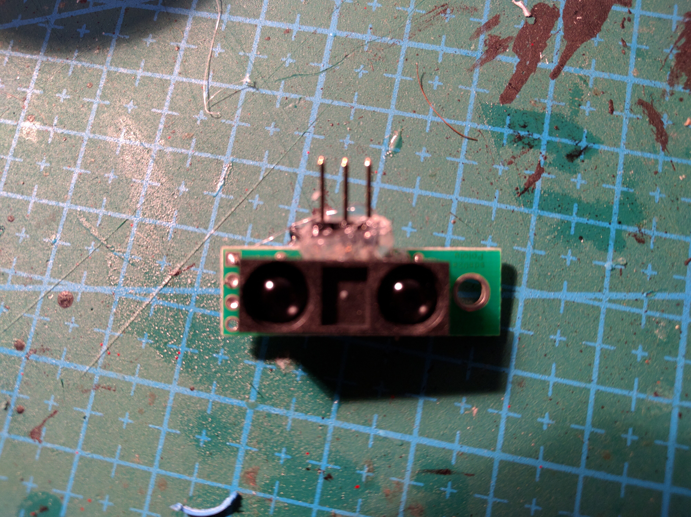
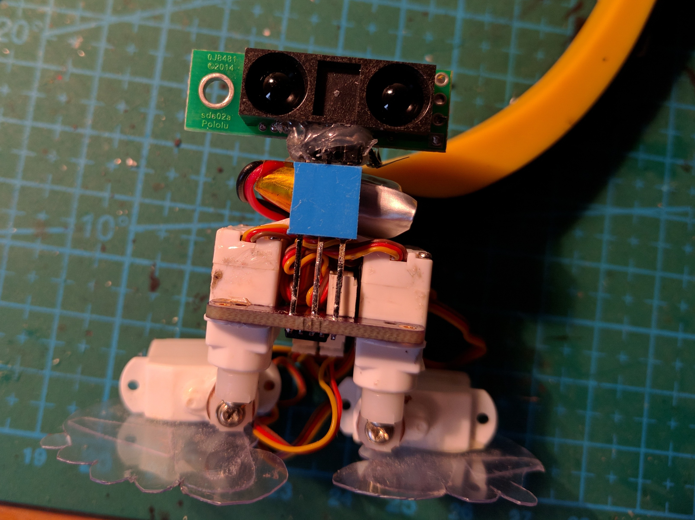
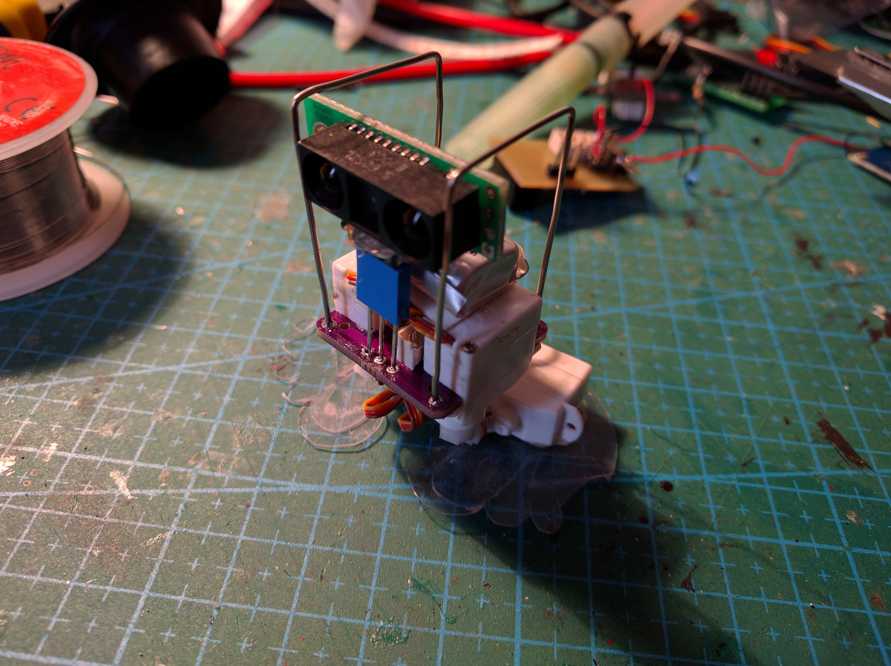
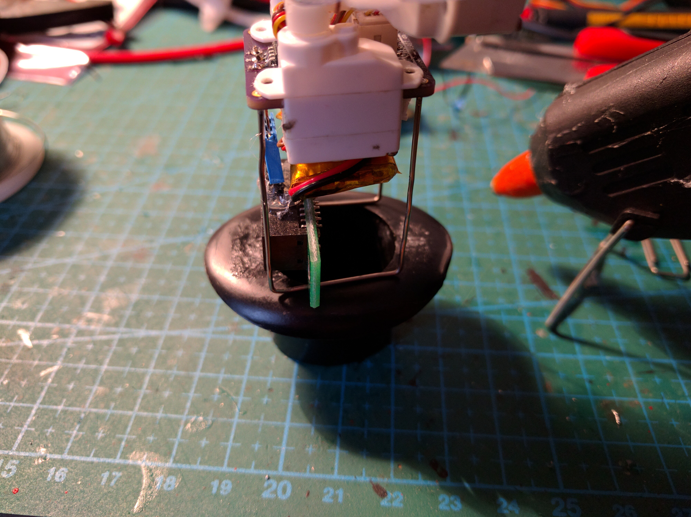

The Body¶
Published on 2016-12-30 in µBob biped robot.
Today I’m continuing the work on resurrecting µBob. I decided to use a Pololu SHARP distance sensor (because it can work with 3V), and using a bit of hot glue I attached the pins to it, so that I can plug it in easily:
On the robot side, I used stacking headers to give some distance from the PCB:
Next, to make sure it will walk in this configuration, a quick test:
Then I worked on the body frame. I decided to use paperclips this time. Turns out you can solder them, so I bent them and soldered them into the holes in the PCB:
A little bit of hot glue, and the hat is back on:
Finally, I also transplanted the old mustache.